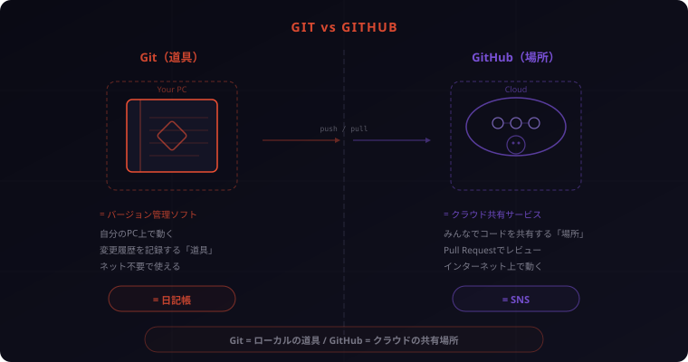
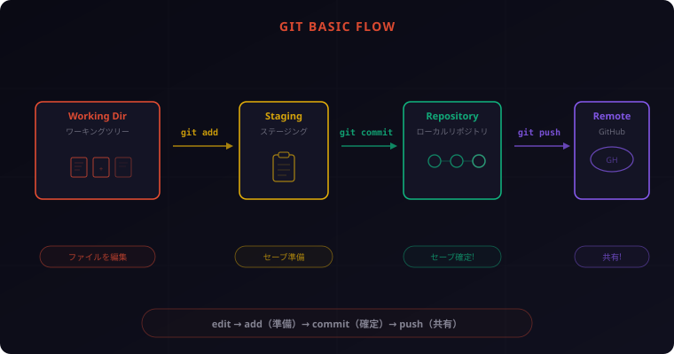
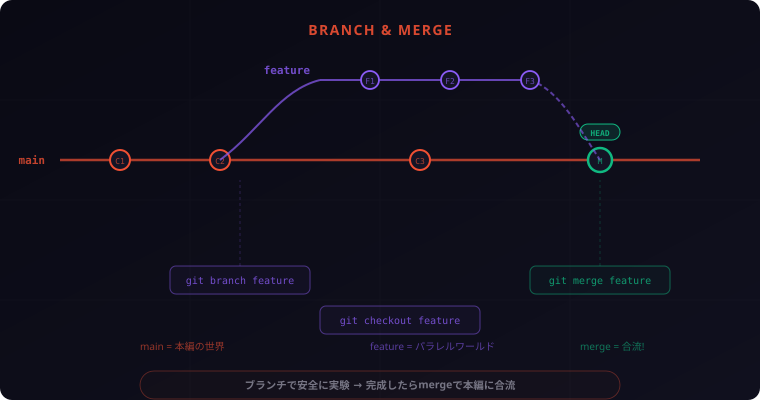

Git & GitHub入門 ― チーム開発の第一歩を完全図解

「Git？GitHub？名前は聞いたことあるけど、何が違うの？」——そんな方のための記事です。ファイル名に「最終版_本当の最終版」と付けた経験がある人なら、きっとGitの便利さに感動するはず。今日は一緒に、チーム開発の第一歩を踏み出しましょう。
1. なぜGitとGitHubを学ぶのか
こんなファイル名、見覚えありませんか？
report_v1.docx
report_v2.docx
report_v2_修正版.docx
report_v2_修正版_最終.docx
report_v2_修正版_最終_本当の最終版.docx「あれ、どれが最新？」「誰がどこを変えたの？」「先週の状態に戻したい……」。こうした悩みは、プログラミングの世界でも日常茶飯事でした。
Gitは、この「ファイルのコピー地獄」を解決するために生まれたツールです。すべての変更履歴を自動で記録し、いつでも過去の状態に戻せる。しかも誰が・いつ・何を変えたかが一目瞭然です。
そしてGitHubは、Gitで管理したコードをチームで共有・協力するためのプラットフォーム。世界中の開発者が使っている、いわば「開発者のSNS」です。
エンジニアを目指すなら、GitとGitHubは避けて通れない基礎スキル。この記事で、ゼロからしっかりマスターしましょう。
2. GitとGitHubは何が違うの？
初心者がまず混乱するのが「GitとGitHubの違い」です。名前が似ているので混同しがちですが、役割はまったく異なります。
Git = 道具（バージョン管理ソフト）
Gitは、自分のパソコン上で動くバージョン管理ソフトウェアです。ファイルの変更履歴を記録し、過去の状態に戻したり、変更内容を比較したりできます。インターネットがなくても使えます。
GitHub = 場所（クラウド上の共有サービス）
GitHubは、Gitで管理しているコードをインターネット上で共有するためのWebサービスです。他の人とコードを共有したり、レビューし合ったり、共同開発したりできます。
日記帳 vs SNS
わかりやすくたとえるなら:
- Git = 日記帳。自分の手元で日々の記録をつける道具
- GitHub = SNS。日記の内容をみんなに公開・共有する場所
日記帳だけでも十分役に立ちますが、SNSと組み合わせれば、みんなと一緒にプロジェクトを進められる。これがGitとGitHubの関係です。

3. Gitの基本概念 — 「セーブポイント」で考える
Gitを理解するために、ゲームのセーブに例えて考えてみましょう。
3段階の仕組み
Gitには3つの「場所」があります:
- ワーキングツリー（Working Directory） — ファイルを実際に編集する場所。ゲームで言えば「プレイ中」の状態
- ステージングエリア（Staging Area） — 「次のセーブに含める変更」を選ぶ場所。セーブメニューを開いて「どのスロットにセーブするか」を選んでいる状態
- リポジトリ（Repository） — セーブデータが保存される場所。過去のセーブポイントがすべて残っていて、いつでも好きな時点に戻れる
なぜ「ステージング」が必要なの？
「ファイルを変更したら自動でセーブしてくれればいいのに」と思うかもしれません。でもステージングがあることで、変更の一部だけをセーブすることができます。
たとえば、ファイルAとファイルBを同時に編集したけど、「今回はファイルAの変更だけ記録したい」というケース。ステージングなら、ファイルAだけ選んでセーブ（コミット）できます。
4. Gitをインストールしよう
それでは、実際にGitをインストールしましょう。
macOS
ターミナルを開いて以下を実行:
# Homebrewがインストール済みなら
brew install git
# または、Xcode Command Line Toolsに含まれるGitを使う
xcode-select --installWindows
git-scm.com から「Git for Windows」をダウンロードしてインストール。インストーラーの設定はデフォルトのままでOKです。「Git Bash」というターミナルが一緒にインストールされます。
Linux（Ubuntu/Debian）
sudo apt update
sudo apt install gitインストール確認
インストールが完了したら、バージョンを確認しましょう:
git --version
# 出力例: git version 2.44.0初期設定（必須）
Gitを使い始める前に、名前とメールアドレスを設定します。これはコミット（セーブ）のたびに「誰が変更したか」を記録するために必要です。
git config --global user.name "あなたの名前"
git config --global user.email "you@example.com"設定内容の確認:
git config --list
# 出力例:
# user.name=あなたの名前
# user.email=you@example.com
user.email は、あとでGitHubアカウントを作るときに使うメールアドレスと同じにしておくのがおすすめ。そうするとGitHub上でコミットが自分のアカウントに紐づくようになります。
5. はじめてのコミット
いよいよ実践です。手を動かしながら、Gitの基本操作を覚えましょう。
ステップ1: プロジェクトフォルダを作る
mkdir my-first-project
cd my-first-projectステップ2: Gitリポジトリを初期化する
git initこれで、my-first-project フォルダがGitで管理されるようになります。目に見えない .git フォルダが作成され、ここにすべての履歴データが保存されます。
ステップ3: ファイルを作成する
# テキストエディタでファイルを作成
echo "# My First Project" > README.mdステップ4: 状態を確認する
git statusすると以下のような出力が表示されます:
On branch main
No commits yet
Untracked files:
(use "git add <file>..." to include in what will be committed)
README.md
nothing added to commit but untracked files present「Untracked files」= Gitがまだ追跡していないファイル。ステージングに載せる前の状態です。
ステップ5: ステージングに追加する
git add README.mdもう一度 git status を実行すると:
Changes to be committed:
(use "git rm --cached <file>..." to unstage)
new file: README.md「Changes to be committed」= 次のコミットに含まれる変更。ステージングに載った状態です。
ステップ6: コミットする
git commit -m "最初のコミット: READMEを追加"-m のあとに「コミットメッセージ」を書きます。「何をしたか」を簡潔に記録するメモです。未来の自分やチームメンバーが見て意味がわかるように書きましょう。
ステップ7: 履歴を確認する
git logコミットの記録が表示されます。「誰が・いつ・何をしたか」がすべて残っています。

おめでとうございます、最初のコミット完了！ このinit → add → commitの流れがGitの基本中の基本。毎日使うことになるので、指が覚えるまで何度も練習してみてください。
6. ブランチ — 「パラレルワールド」で安全に実験する
ブランチ（branch = 枝）は、Gitの最も強力な機能のひとつです。
ブランチとは？
ブランチは、「パラレルワールド」を作る機能です。メインのコードに影響を与えずに、新機能の開発やバグ修正を別の世界線で進められます。
- main（本編の世界） — 常に動く安定版のコード
- feature（パラレルワールド） — 新機能を実験する場所
実験がうまくいったら本編に合流（マージ）。失敗したらパラレルワールドごと消せばいい。本編は一切傷つきません。
ブランチを作る・切り替える
# 新しいブランチを作成して切り替え
git checkout -b feature/add-login
# 確認（現在のブランチに * が付く）
git branch
# main
# * feature/add-loginこれで「feature/add-login」というパラレルワールドに移動しました。ここでの変更は main ブランチには影響しません。
ブランチでの作業
# ファイルを編集・追加
echo "ログイン機能を追加" >> README.md
# いつもどおりadd & commit
git add README.md
git commit -m "ログイン機能の説明を追加"mainブランチに戻る
git checkout mainmainに戻ると、さっき加えた変更は消えています（パラレルワールドに残っている）。
マージ（合流）する
# mainブランチにいる状態で
git merge feature/add-loginこれで、feature/add-loginの変更がmainに取り込まれます。パラレルワールドの成果が本編に合流した瞬間です。

ブランチは「1機能1ブランチ」が基本。feature/login、fix/typo、update/readme みたいに、何をしているかわかる名前を付けるのがコツ。慣れてくると「ブランチなしでは怖くてコード書けない」ってなりますよ！
7. GitHubに登録しよう
ここまではGit（手元の道具）の話でした。ここからは、GitHub（共有の場所）を使ってみましょう。
アカウントを作成する
- github.com にアクセス
- 「Sign up」をクリック
- メールアドレス、パスワード、ユーザー名を入力
- メール認証を完了
無料プランで十分です。パブリック（公開）リポジトリもプライベート（非公開）リポジトリも、どちらも無制限に作れます。
リポジトリを作成する
- GitHubのトップページ右上の「+」→「New repository」
- Repository name に名前を入力（例:
my-first-project） - PublicまたはPrivateを選択
- 「Create repository」をクリック
ローカルのGitリポジトリをGitHubに接続する
リポジトリ作成後に表示される手順をそのまま実行:
# リモート（GitHub）を登録
git remote add origin https://github.com/あなたのユーザー名/my-first-project.git
# ローカルのコミットをGitHubにアップロード
git push -u origin mainこれで、手元のコードがGitHubにアップロードされました！ ブラウザでリポジトリのページを開くと、コードが表示されているはずです。
clone（クローン）で他の人のリポジトリを手元に持ってくる
git clone https://github.com/ユーザー名/リポジトリ名.gitこれで、GitHub上のリポジトリをまるごと手元にコピーできます。オープンソースのコードを読んだり、チームのプロジェクトに参加したりするときに使います。
pull（プル）で最新の変更を取得する
git pull origin mainチームメンバーがGitHubにpushした変更を、自分の手元に取り込む操作です。朝一番に git pull するのが良い習慣です。
8. Pull Request — チーム開発の必殺技
Pull Request（PR）は、GitHubが提供するチーム開発の核心機能です。
Pull Requestとは？
「自分のブランチの変更を、mainブランチに取り込んでほしい」というリクエスト。いきなりmergeするのではなく、チームメンバーにレビューしてもらってからマージする仕組みです。
PRの流れ
- ブランチを作って作業する（前のセクションで学んだとおり）
- GitHubにpushする
git push origin feature/add-login - GitHubでPull Requestを作成する
- リポジトリのページで「Pull requests」→「New pull request」
- 変更内容のタイトルと説明を書く
- レビューを受ける
- チームメンバーがコードを確認し、コメントをつける
- 「ここは別の書き方のほうがいいかも」「バグがありそう」などフィードバックをもらう
- 修正があれば対応する
- ブランチに追加でコミット＆pushすれば、PRに自動的に反映される
- 承認されたらマージ
- 「Merge pull request」ボタンをクリック
なぜPRが大事なの？
- バグの早期発見: 複数の目でコードをチェックすることで、見落としを防ぐ
- 知識の共有: レビューを通じて、チーム全体のスキルが向上する
- 変更の記録: 「なぜこの変更をしたのか」がPRのコメントに残る
- 安全なマージ: レビューなしにmainブランチが壊れるリスクを防ぐ
PRは「自分のコードを見てもらう」というと緊張するかもしれないけど、最高の学習機会です。ベテランのレビューコメントから学べることがめちゃくちゃ多い。個人開発でも「mainに直接pushしない、必ずPRを通す」という習慣をつけておくと、チームに入ったとき即戦力になれます。
9. コンフリクト（衝突）を恐れない
チーム開発をしていると、避けて通れないのがコンフリクト（衝突）です。
コンフリクトはなぜ起きる？
2人の開発者が同じファイルの同じ場所を同時に変更した場合に発生します。Gitは「どちらの変更を採用すればいいかわからない」ので、人間に判断を委ねます。
たとえば:
- Aさんが
greeting = "Hello"を"Hi"に変更 - Bさんが同じ行を
"Hey"に変更 - → Gitは「Hi? Hey? どっち？」と迷う = コンフリクト発生
コンフリクトの解消方法
マージ時にコンフリクトが起きると、ファイルにこんなマーカーが入ります:
<<<<<<< HEAD
greeting = "Hi"
=======
greeting = "Hey"
>>>>>>> feature/update-greeting解消手順:
<<<<<<<、=======、>>>>>>>のマーカーを削除する- 正しいコードだけを残す（片方を採用、または両方を組み合わせる）
- ファイルを保存して
git add→git commit
# 解消後（正しい方を残す）
greeting = "Hi"コンフリクトを減らすコツ
- こまめにpullする: 他の人の変更を早めに取り込む
- ブランチを小さく保つ: 大きな変更を一気にやらない
- 担当箇所を分ける: チームで「誰がどのファイルを触るか」を共有する
コンフリクトは怖くないです。最初は焦るかもしれないけど、マーカーの見方さえ覚えれば対処は簡単。VS CodeやGitHub Desktopなら、「どちらを採用するか」をボタンひとつで選べるGUIもあるので、ツールに頼るのもアリです。
10. まとめ＆Gitコマンドチートシート
お疲れさまでした！ Git＆GitHubの基礎を一気に駆け抜けましたね。最後に、今日学んだことを振り返りましょう。
今日のポイント
- Gitはバージョン管理の「道具」、GitHubはコードを共有する「場所」
- Gitはワーキングツリー → ステージング → リポジトリの3段階
- ブランチでパラレルワールドを作り、安全に実験できる
- Pull Requestでチームのコードレビューを実践できる
- コンフリクトは怖くない。マーカーを見て正しいコードを残すだけ
よく使うGitコマンド一覧
| コマンド | 説明 |
|---|---|
git init |
リポジトリを新規作成 |
git clone URL |
リモートリポジトリをコピー |
git status |
現在の状態を確認 |
git add ファイル名 |
ステージングに追加 |
git add . |
すべての変更をステージングに追加 |
git commit -m "メッセージ" |
コミット（セーブ確定） |
git log |
コミット履歴を表示 |
git diff |
変更内容を比較 |
git branch ブランチ名 |
新しいブランチを作成 |
git checkout ブランチ名 |
ブランチを切り替え |
git checkout -b ブランチ名 |
作成と切り替えを同時に |
git merge ブランチ名 |
指定ブランチを現在のブランチに統合 |
git remote add origin URL |
リモートリポジトリを登録 |
git push origin ブランチ名 |
リモートにアップロード |
git pull origin ブランチ名 |
リモートの変更を取得して統合 |
次のステップ
- GitHub上でオープンソースプロジェクトを見てみる。実際のPRやIssueを読むだけで学びになります
- 個人プロジェクトをGitHubに公開してみる。ポートフォリオにもなります
.gitignoreファイルを学ぶ。「Gitで管理しないファイル」を指定する設定ファイルです
Git & GitHubは、使えば使うほど手に馴染む道具です。最初のうちは「add → commit → push」だけでOK。慣れてきたらブランチ、PR、コンフリクト解消……と段階的にステップアップしていけば大丈夫。まずは今日、自分のプロジェクトで git init してみてください！
ステージングは最初ちょっとめんどくさく感じるかもしれないけど、慣れるとこれが超便利。「今やった変更のうち、この部分だけコミットしよう」ってのが自在にできるようになる。きれいなコミット履歴を作るためのコツです！